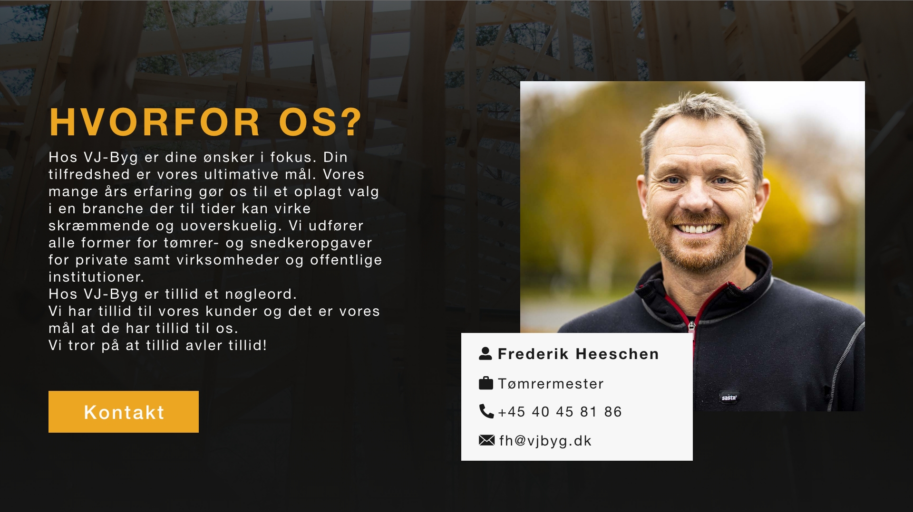

Redesign for local contractor
THE CONCEPT OF THIS REDESIGN WAS TO CREATE STRONG CALL-TO-ACTIONS AND USE A COLOR SCHEME WELL KNOWN FROM THE CONTRACTING INDUSTRY TO INDUCE A SENSE OF FAMILIARITY. IT WAS IMPORTANT FOR US TO TELL A STORY OF A MULTI GENERATIONAL AND LOCAL COMPANY AS A TRUSTWORTHY PARTNER FOR POTENTIAL CUSTOMERS. WE FOCUSED ON MAKING A RESPONSIVE WEBSITE BY DESIGNING WITH THE PRINCIPLE OF MOBILE FIRST.
IN THIS PROJECT MY PRIMARY ROLE WAS WITH UX/UI AND LOGO DESIGN.
The frontpage contains five segments which works to build trust and answer all of the customers immediate questions. On subpages customers can find further information.
We also created a completely new logo to go with their new visual identity. The idea of the logo is to immediately connect VJ-byg to the construction industry as well as appear more professional with a more modern logo.
With a majority of all internet traffic coming from mobile devices, it was obviously very important for us to create a modern responsive design.